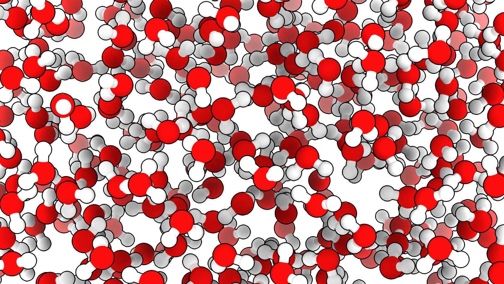

Water Box Banner#
This page provides the instructions and code to produce the corresponding figure presented in the textbook. Any figure made using Python or command-line tools will be described in a notebook like this one. These notebooks are provided so I can remember how to create these images and visualizations and speed up my work when returning to this project after a period of time. They will also provide templates for you, the student, to use should you wish to make your own version.
Instructions#
The water banner for the website was made using UCSF ChimeraX.
A data file featuring a “water box”, a collection of water molecules simulating liquid water produced by a molecular dynamics simulation. I obtained the data at rmcgibbo/openmm-cmd. In the examples, I found the file named “waterbox.pdb”.
Open ChimeraX and enter the folloing commands in the command line.
open Water_Box.pdb
style ball
size ballScale +0.07
lighting gentle
graphics silhouettes true color black width 3 depthJump 0.01
lighting depthCue true depthCueColor white depthCueEnd 1 depthCueStart 0.3
Then use the mouse to position the structure as you wish for your image. Then export the scene as a png image using the following command.
save image3.png supersample 4 transparentBackground true
All of thes commands are collected in a command file for ChimeraX. If you use the command open path.cxc (where “path” is the path to your file) then all the commands will be executed automatically. The command file is waterbox.cxc.
Below is the image that was generated. I editted and cropped it for various uses around this website.
{kind=link}
